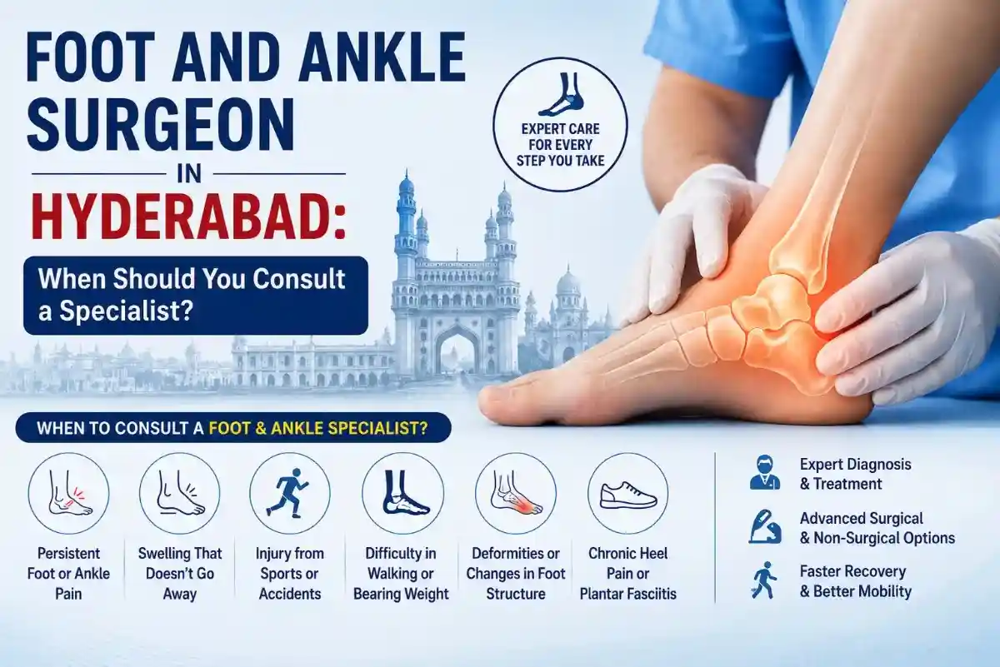

Medically Reviewed by
DR. MIR JAWAD ZAR KHANMBBS, MS - Orthopedic
M.CH-(Ortho) Joint
Replacement surgeon
Foot and Ankle Surgeon in Hyderabad: When Should You Consult a Specialist?
Foot and ankle pain can affect your walking, balance, work, exercise, travel and daily routine. Many people ignore the pain in the beginning, thinking it is only a small sprain or temporary swelling. But when pain keeps coming back, walking becomes difficult, or the ankle feels unstable, it is important to consult a foot and ankle surgeon in Hyderabad for proper diagnosis and treatment.
The foot and ankle carry your full body weight every day. Even a small injury, ligament tear, tendon problem, fracture, heel pain or arthritis can disturb your movement if it is not treated correctly. Some conditions improve with rest, medicines, physiotherapy, footwear correction or non-surgical treatment. But in severe cases, surgery may be required to restore stability, correct deformity or reduce long-term pain.
If you are searching for a reliable foot and ankle surgeon in Hyderabad, this guide will help you understand when to consult a specialist, what symptoms should not be ignored, and what treatment options may be available.
Why Foot and Ankle Problems Should Not Be Ignored
Your foot and ankle are made up of bones, joints, muscles, ligaments, tendons and nerves. They work together to support standing, walking, running, climbing stairs and maintaining balance. When any part of this structure gets injured or damaged, your movement can become painful and unstable.
A minor ankle twist may settle with basic care. But repeated ankle twisting, swelling, heel pain, burning pain, foot deformity or difficulty bearing weight may point to a deeper problem. Ignoring these symptoms can lead to chronic pain, repeated injuries, poor walking posture, knee pain, back pain or long-term joint damage.
Early consultation with an orthopedic specialist helps identify whether the problem is a sprain, fracture, tendon injury, arthritis, nerve compression or foot deformity. This makes treatment more accurate and helps prevent unnecessary delay.
When Should You Consult a Foot and Ankle Surgeon in Hyderabad?
You should consult a specialist when foot or ankle pain starts affecting your daily life. Surgery is not always the first option, but a foot and ankle surgeon can diagnose the exact cause and guide you toward the right treatment.
1. Ankle Pain That Does Not Improve
If ankle pain continues for more than a few days after a twist, fall or sports injury, it should be checked. Pain that keeps returning after walking, running or standing for long hours may indicate ligament weakness, tendon injury or early arthritis.
If the ankle feels painful even after rest, ice, compression and elevation, consult a specialist instead of depending only on painkillers.
2. Swelling, Bruising or Difficulty Walking
Swelling and bruising after an ankle injury can happen with sprains as well as fractures. If you are unable to put weight on the foot, walk properly or stand without support, medical evaluation is important.
A severe ankle sprain can sometimes feel similar to a broken ankle. This is why proper examination and imaging tests are needed to rule out fracture or ligament damage.
3. Repeated Ankle Twisting
Some patients repeatedly twist the same ankle while walking, playing sports or climbing stairs. This may happen due to chronic ankle instability. It often develops after an ankle sprain that did not heal properly.
If your ankle feels loose, weak or unstable, you should not ignore it. Repeated sprains can damage cartilage and increase the risk of long-term ankle arthritis.
4. Heel Pain in the Morning
Heel pain that is worse in the morning or after long sitting may be due to plantar fasciitis. This is a common condition where the thick tissue under the foot becomes inflamed near the heel.
Most plantar fasciitis cases improve with stretching, footwear changes, physiotherapy and non-surgical treatment. In selected chronic cases, advanced options like ESWT therapy in Hyderabad may be considered after doctor evaluation.
5. Pain at the Back of the Ankle
Pain behind the heel or lower calf may be related to Achilles tendinitis or Achilles tendon rupture. Sudden sharp pain, difficulty pushing off the foot, inability to stand on toes or a feeling of being hit at the back of the leg can be warning signs.
Achilles tendon injuries need timely diagnosis because delayed treatment may affect walking strength and sports recovery.
6. Foot Deformity or Toe Pain
Conditions like bunions, hammer toes and metatarsal problems can make walking painful. Patients may notice a bony swelling near the big toe, bent toes, pain in the front of the foot, shoe discomfort or a feeling of walking on pebbles.
When deformity becomes painful or footwear becomes difficult, a foot and ankle specialist can suggest conservative care or surgical correction based on severity.
7. Burning Pain, Numbness or Tingling
Burning pain between the toes, numbness or tingling may be due to nerve irritation, Morton's neuroma or other nerve-related foot conditions. These symptoms should be evaluated early, especially if they are affecting walking or daily activities.
Patients with diabetes should be more careful because foot problems can become serious if not treated in time.
8. Ankle Arthritis and Stiffness
Ankle arthritis can cause pain, swelling, stiffness and reduced movement. It may develop after an old injury, fracture, rheumatoid arthritis or long-term wear and tear. If walking becomes painful or the ankle becomes stiff, consult an orthopedic specialist for diagnosis and treatment planning.
Common Conditions Treated by a Foot and Ankle Specialist
A foot and ankle surgeon treats both injury-related and chronic conditions. Some common problems include:
- Chronic ankle sprain
- Lateral ankle sprain
- Ankle instability
- Achilles tendon rupture
- Ankle fracture
- Foot fracture
- Bunions
- Hammer toes
- Metatarsal pain
- Ankle arthritis
- Morton's neuroma
- Plantar fasciitis
- Heel pain
- Sports-related foot and ankle injuries
- Tendon and ligament injuries
- Foot deformities
The main goal is to reduce pain, improve function and help the patient return to daily activities safely.
Is Surgery Always Needed for Foot and Ankle Pain?
No. Surgery is not required for every foot or ankle problem. Many patients improve with non-surgical care when the condition is diagnosed early.
Non-surgical treatment may include:
- Rest and activity modification
- Medicines for pain and swelling
- Ice and compression after injury
- Physiotherapy and strengthening exercises
- Footwear correction
- Ankle brace or support
- Custom insoles
- Stretching exercises
- Injections in selected cases
- ESWT therapy for certain chronic pain conditions
Surgery may be considered when pain is severe, instability continues, deformity progresses, fracture alignment is poor, or non-surgical treatment is not giving relief.
What Happens During a Foot and Ankle Consultation?
During consultation, the doctor will first understand your symptoms, injury history and daily activity pattern. You may be asked:
- When did the pain start?
- Was there a fall, twist or sports injury?
- Is the pain in the heel, ankle, toes, sole or front of the foot?
- Does swelling increase after walking?
- Can you bear weight on the foot?
- Does the ankle feel unstable?
- Do you have diabetes, arthritis or previous injury?
- What footwear do you use daily?
The doctor may check walking pattern, swelling, tenderness, ankle stability, foot shape, range of motion and strength. Depending on the condition, X-ray, MRI, ultrasound or blood tests may be advised.
This helps in deciding whether you need basic care, physiotherapy, immobilisation, advanced pain treatment or surgery.
Foot and Ankle Surgeon Near Me in Hyderabad
Patients often search for "foot and ankle surgeon near me" or "ankle pain doctor near me" when pain starts disturbing daily movement. If you are located in Hyderabad, choosing a specialist with orthopedic and surgical experience can help you receive the right diagnosis and treatment plan.
Dr. Mir Jawad Zar Khan provides orthopedic care at Germanten Hospital, Attapur, Hyderabad. Patients from nearby areas such as Attapur, Mehdipatnam, Rajendranagar, Tolichowki, Bandlaguda, Shamshabad, Manikonda, Gachibowli, HITEC City, Madhapur, Kondapur, Banjara Hills, Jubilee Hills, Kukatpally, Secunderabad, LB Nagar and nearby localities can consult for foot pain, ankle pain, heel pain, ankle sprain, fractures and advanced orthopedic concerns.
For broader orthopedic issues, you can also visit the page on best orthopedic surgeon in Hyderabad.
Why Choose Dr. Mir Jawad Zar Khan for Foot and Ankle Care?
Dr. Mir Jawad Zar Khan is a senior orthopedic surgeon in Hyderabad with experience in joint replacement, trauma care, sports injuries, spine care and advanced orthopedic treatment. At Germanten Hospital, patients receive structured evaluation, diagnosis, treatment planning and recovery guidance for bone, joint, ligament, tendon and musculoskeletal problems.
A specialist-led approach is important because foot and ankle pain can have multiple causes. The same symptom may come from a sprain, fracture, tendon issue, arthritis, nerve problem or deformity. Accurate diagnosis helps avoid wrong treatment and unnecessary delay.
Foot and ankle problems may look small in the beginning, but they can affect your walking, balance and quality of life if ignored. Pain after injury, repeated ankle sprain, heel pain, swelling, stiffness, deformity, burning pain or difficulty bearing weight should be evaluated by a specialist.
A qualified foot and ankle surgeon in Hyderabad can help diagnose the cause and suggest the right treatment, whether it is physiotherapy, pain management, ESWT, fracture care, ligament repair or surgery.
Timely consultation gives you better control over pain, better movement and a safer recovery path.
Book a Foot and Ankle Consultation in Hyderabad
If foot pain, ankle pain, swelling, heel pain, repeated ankle twisting, stiffness or walking difficulty is affecting your daily life, do not wait for the condition to become severe. Early evaluation can help identify the exact cause and guide you toward the right treatment.
Consult Dr. Mir Jawad Zar Khan for foot and ankle diagnosis, treatment planning and personalised orthopedic care in Hyderabad.
FAQs
1. When should I consult a foot and ankle surgeon in Hyderabad?
You should consult a specialist if foot or ankle pain continues, swelling does not reduce, walking is difficult, the ankle feels unstable, or pain keeps returning after activity.
2. Does ankle pain always need surgery?
No. Many ankle pain cases improve with rest, medicines, physiotherapy, brace support and lifestyle changes. Surgery is considered only when the condition is severe or non-surgical treatment is not effective.
3. What are the signs of a serious ankle injury?
Severe pain, swelling, bruising, inability to bear weight, visible deformity, numbness, tingling or repeated ankle giving way should be checked by a doctor.
4. Can plantar fasciitis be treated without surgery?
Yes. Most plantar fasciitis cases improve with stretching, footwear correction, physiotherapy, medicines and advanced non-surgical treatment options like ESWT in selected cases.
5. What causes repeated ankle sprains?
Repeated ankle sprains may happen due to weak ligaments, poor healing after a previous sprain, muscle weakness, balance issues or chronic ankle instability.
6. Which areas in Hyderabad are covered for foot and ankle care?
Patients from Attapur, Mehdipatnam, Rajendranagar, Tolichowki, Manikonda, Gachibowli, Madhapur, Kondapur, Banjara Hills, Jubilee Hills, Kukatpally, Secunderabad, LB Nagar and nearby areas can consult for foot and ankle concerns.
7. Where can I consult a foot and ankle specialist near me in Hyderabad?
You can consult Dr. Mir Jawad Zar Khan at Germanten Hospital, Attapur, Hyderabad, for foot pain, ankle pain, heel pain, sprains, fractures and foot and ankle surgery evaluation.


DR. MIR JAWAD ZAR KHAN
MBBS, MS - Orthopedic, M.CH-(Ortho) Joint Replacement Surgeon
As the visionary Chairman and Managing Director of Germanten Hospitals, Hyderabad, Dr. Mir Jawad Zar Khan brings over two decades of surgical leadership to the field. He is dedicated to transforming lives through evidence-based treatments, advanced robotic technology, and a commitment to patient quality of life.